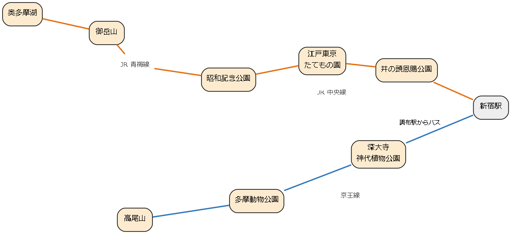

9. 多摩地域
多摩地域は、23 区の西に広がる 26 市と 3 町 1 村からなる地域である。東部は住宅地が広がる中に、奈良時代から続く古刹や広い公園、動物園などがある。西部は関東山地に続く山の地域で、高尾山や御岳山、奥多摩湖など、都心から 1〜2 時間で本格的な自然に触れられる名所がある。この章では、日帰りで出かけられる代表的な名所を紹介する。

図: 多摩地域の名所と主な路線（模式図）
図の橙色の線は JR 中央線・青梅線の方面、青色の線は京王線の方面を表す。高尾山は JR 中央線の高尾駅からも行ける。
9.1. 高尾山
標高 599 m の、都心から最も気軽に行ける山である。ケーブルカーやリフトを使えば中腹まで楽に上れ、子どもから高齢者まで多くの人が登山を楽しんでいる。山の全体が明治の森高尾国定公園に指定され、豊かな動植物が見られる。
見どころ
高尾山薬王院：山の中腹にある真言宗の寺院で、飯縄大権現を本尊とする。天狗の信仰で知られ、境内には大天狗と小天狗の像が立つ。
山頂からの眺め：天気の良い日には、山頂の展望台から富士山や丹沢の山々、都心の高層ビル群が見える。冬至のころの夕方には、富士山の山頂に太陽が沈む「ダイヤモンド富士」が見られることがある。
たこ杉：1 号路の途中にある杉の大木で、根がたこの足のようにうねっている。
ケーブルカー：麓の清滝駅と中腹の高尾山駅を結ぶケーブルカーで、日本一の急勾配の区間がある。
歴史・由来
薬王院は、744 年に聖武天皇の命を受けた行基が開いたと伝えられる。山は古くから修験道の霊場とされ、寺が森を守ってきたことから、都心の近くにありながら豊かな自然が残った。2007 年にフランスの旅行ガイドで最高評価の三つ星を得たことから、海外からの登山者も増えた。
楽しみ方のこつ
山頂への道には、舗装された 1 号路、沢沿いを歩く 6 号路、尾根を歩く稲荷山コースなど複数の道があり、体力や好みに合わせて選べる。紅葉の時期（11 月中旬から下旬ごろ）の週末は、ケーブルカーの乗り場に長い列ができ、山頂も大変に混雑する。平日の朝に出かけるのがよい。気軽に登れる山とはいえ、歩きやすい靴、飲み物、雨具は用意する。麓の高尾山口駅の隣には温浴施設があり、下山後に汗を流せる。
最寄り駅 |
京王高尾線の高尾山口駅からケーブルカーの清滝駅まで徒歩約 5 分 |
|---|---|
料金 |
無料（ケーブルカーとリフトは有料） |
予約 |
不要 |
所要時間の目安 |
3〜5 時間（ケーブルカーを使う場合は短くなる） |
公式サイト |
併せて訪れたい名所
9.2. 深大寺
調布市にある天台宗の寺で、奈良時代の 733 年に開かれたと伝えられる。都内では浅草寺に次ぐ古い歴史を持つ寺とされ、門前には深大寺そばの店が並ぶ。
見どころ
釈迦如来像：飛鳥時代の終わりから奈良時代の初めごろに造られた銅造の仏像で、2017 年に国宝に指定された。釈迦堂で拝観できる。
山門：1695 年に建てられたかやぶきの門で、深大寺に残る最も古い建物である。
深大寺そば：寺の周辺は米作りに適さない土地であったため、そばが作られてきた。門前には 20 軒ほどのそば店が並ぶ。
湧き水と緑：境内とその周辺は武蔵野の雑木林と湧き水に恵まれ、夏でも涼しい。
歴史・由来
寺の名前は、水の神である深沙大王（じんじゃだいおう）に由来する。寺伝によれば、満功上人がこの神を祀って寺を開いた。平安時代に天台宗の寺となり、厄除けの信仰を集めた。毎年 3 月 3 日と 4 日には「だるま市」が開かれ、日本三大だるま市の一つに数えられる。
楽しみ方のこつ
そば店は昼時に混雑するため、少し時間をずらすとよい。隣接する神代植物公園と併せて 1 日をかけて回るのがおすすめである。
最寄り駅 |
京王線の調布駅・つつじヶ丘駅、JR 中央線の三鷹駅・吉祥寺駅からバスで「深大寺」下車 |
|---|---|
料金 |
無料 |
予約 |
不要 |
所要時間の目安 |
1〜1.5 時間 |
公式サイト |
併せて訪れたい名所
北に神代植物公園がある。
9.3. 神代植物公園
都内で唯一の都立の植物公園で、約 4,800 種類、10 万本の植物が植えられている。特にばら園は、春と秋の見ごろに多くの人が訪れる。
見どころ
ばら園：左右対称に整えられた沈床式の庭園に、約 400 品種のばらが植えられている。春（5 月ごろ）と秋（10 月ごろ）に「ばらフェスタ」が開かれる。
大温室：熱帯の花木、ベゴニア、ラン、熱帯スイレンなどを展示する温室で、一年を通じて花を楽しめる。
季節の花木：梅、桜、つつじ、しゃくなげ、紅葉など、園内のどこかで季節の花木を楽しめる。
水生植物園：深大寺の近くにある分園で、湿地の植物を木道から観察できる（無料）。
歴史・由来
もとは東京の街路樹などを育てるための苗圃であった場所を、1961 年に植物公園として開園した。
楽しみ方のこつ
ばらの見ごろの週末は混雑する。正門のほか、深大寺側の門があり、深大寺と行き来しやすい。月曜日は原則として休園である。
最寄り駅 |
京王線の調布駅・つつじヶ丘駅、JR 中央線の三鷹駅・吉祥寺駅からバスで「神代植物公園前」下車 |
|---|---|
料金 |
有料（水生植物園は無料） |
予約 |
不要 |
所要時間の目安 |
1.5〜2 時間 |
公式サイト |
併せて訪れたい名所
南に深大寺がある。
9.4. 井の頭恩賜公園
吉祥寺駅の近くにある、井の頭池を中心とした公園である。池は神田川の水源で、江戸時代には江戸の町に飲み水を送る神田上水の水源であった。
見どころ
井の頭池とボート：池の周りには桜やもみじの木が茂り、手こぎのボートやスワンボートで池に出られる。
井の頭弁財天：池の西の端にある弁財天を祀るお堂である。
井の頭自然文化園：公園の中にある小さな動物園と水族館で、日本の動物を中心に飼育している（有料）。
三鷹の森ジブリ美術館：公園の西園の一角にある、スタジオジブリのアニメーション作品の世界を紹介する美術館である。入館は日時指定の予約制である。
歴史・由来
池の名前は、江戸の上水の源（井の頭）であったことに由来し、3 代将軍の徳川家光が名付けたと伝えられる。1913 年に皇室から東京市に下賜され、1917 年に日本で最初の郊外公園として開園した。近年は池の水を抜いて外来種を取り除く「かいぼり」が繰り返し行われ、池の水質が良くなり、在来の水草や生き物が戻ってきている。
楽しみ方のこつ
桜の時期は池の周りが花見客で大変に混雑する。ボートは桜の時期には長い待ち時間となる。吉祥寺駅から公園まで、商店街を抜けて歩くのも楽しい。
最寄り駅 |
JR 中央線・京王井の頭線の吉祥寺駅から徒歩約 5 分、京王井の頭線の井の頭公園駅からすぐ |
|---|---|
料金 |
無料（ボート、自然文化園、ジブリ美術館は有料） |
予約 |
不要（ジブリ美術館は日時指定の予約が必要） |
所要時間の目安 |
1〜2 時間 |
公式サイト |
併せて訪れたい名所
吉祥寺駅からバスで深大寺に行ける。
9.5. 国営昭和記念公園
立川市と昭島市にまたがる広大な国営公園で、季節ごとに一面の花畑が見られる。広い芝生の広場やサイクリングコースもあり、一日をかけて楽しめる。
見どころ
みんなの原っぱ：中央にある広大な芝生の広場で、シンボルの大けやきが立つ。
花の丘と花畑：春にはチューリップやポピー、夏にはひまわり、秋にはコスモスと、季節ごとに一面の花畑が広がる。
カナールといちょう並木：立川口の近くにある噴水の水路と、その両側のいちょう並木である。11 月には黄葉が見ごろを迎える。
日本庭園：池を中心とした回遊式の日本庭園で、盆栽の展示もある。
サイクリングコース：園内を一周するサイクリングコースがあり、園内で自転車を借りられる。
歴史・由来
公園は、アメリカ軍の立川基地の跡地の一部に、昭和天皇の在位 50 年を記念して整備され、1983 年に開園した。
楽しみ方のこつ
園内は広く、端から端まで歩くと 1 時間近くかかるため、目当ての花畑の場所と最寄りの入口を事前に確認しておくとよい。花の見ごろの情報は公式サイトで随時発表される。
最寄り駅 |
JR 青梅線の西立川駅から西立川口まで徒歩約 2 分、JR 立川駅からあけぼの口まで徒歩約 10 分 |
|---|---|
料金 |
有料 |
予約 |
不要 |
所要時間の目安 |
2〜5 時間 |
公式サイト |
併せて訪れたい名所
9.6. 多摩動物公園
日野市の丘陵の地形を生かした動物園で、動物を柵ではなく堀で区切って展示する方式を多く取り入れている。広い敷地の中で、動物たちがのびのびと過ごす様子を観察できる。
見どころ
アジア園・アフリカ園・オーストラリア園：地域ごとに動物を展示している。アフリカ園では、キリン、ライオン、チーターなどを広い放飼場で見られる。
オランウータンのスカイウォーク：高い鉄塔の間に張られたロープを、オランウータンが渡っていく様子を見られることがある。
昆虫園：大きな温室の中を、チョウが自由に飛び回る昆虫生態園がある。
歴史・由来
1958 年に開園した。自然の地形を生かし、動物の生息地に近い環境で展示することを目指した。
楽しみ方のこつ
園内は起伏が大きく、坂道が多い。園内を巡回するバスもあるため、上手に使いたい。上野動物園とは異なり、水曜日が原則として休園日である。
最寄り駅 |
京王動物園線・多摩モノレールの多摩動物公園駅から徒歩約 1 分 |
|---|---|
料金 |
有料 |
予約 |
不要 |
所要時間の目安 |
3〜4 時間 |
公式サイト |
併せて訪れたい名所
京王線で西へ向かえば高尾山がある。
9.7. 江戸東京たてもの園
江戸時代から昭和の初めまでの、都内にあった歴史的な建物を移築して復元・展示している野外博物館である。都立小金井公園の中にあり、商家、銭湯、農家、政治家や建築家の住宅などの建物の中に入って見学できる。
見どころ
下町中通り：昭和の初めの商店や銭湯、居酒屋が並ぶ通りで、懐かしい街並みを再現している。正面を銅板などで飾った「看板建築」の店も見られる。
子宝湯：足立区にあった、宮造りの立派な銭湯である。
高橋是清邸：明治から昭和の初めの政治家の高橋是清の住宅で、二・二六事件の現場となった建物である。
前川國男邸：近代建築の巨匠の前川國男が、戦時中に建てた自邸である。
歴史・由来
都内では、開発によって歴史的な建物が次々と失われてきた。それらを移築して保存し、後世に伝えるために、1993 年に江戸東京博物館の分館として開園した。
楽しみ方のこつ
建物の多くは中に上がって見学できるため、脱ぎやすい靴で出かけるとよい。小金井公園は桜の名所として知られ、花見と併せて訪れるのもよい。月曜日は原則として休園である。
最寄り駅 |
JR 中央線の武蔵小金井駅からバスで約 5 分、「小金井公園西口」下車徒歩約 5 分 |
|---|---|
料金 |
有料 |
予約 |
不要 |
所要時間の目安 |
2〜3 時間 |
公式サイト |
併せて訪れたい名所
江戸の暮らしをさらに詳しく知るには、両国の江戸東京博物館がよい。
9.8. 御岳山
標高 929 m の山で、山頂には関東の霊山として信仰を集めてきた武蔵御嶽神社が鎮座する。ケーブルカーで中腹まで上ることができ、山上の宿坊の集落や渓谷の散策を楽しめる。
見どころ
武蔵御嶽神社：山頂にある神社で、オオカミを神の使い（おいぬ様）として祀っている。このことから、愛犬と一緒に参拝する人も多い。宝物殿では、鎌倉時代の武将の畠山重忠が奉納したと伝えられる鎧（国宝）を見られる。
宿坊の集落：神社の参道沿いには、参拝者を泊める宿坊が建ち並ぶ。
ロックガーデン：苔むした岩の間を沢が流れる渓谷の遊歩道で、七代の滝、綾広の滝などの滝がある。
レンゲショウマ：8 月ごろ、山の斜面に薄紫色の可れんな花が咲く。
歴史・由来
社伝によれば、創建は古代にさかのぼるとされる。中世以降は山岳信仰の霊場として栄え、江戸時代には関東各地から講（信仰の仲間の集まり）を組んで参拝する人が多かった。宿坊は、こうした参拝者を泊めるために発達したものである。
楽しみ方のこつ
ケーブルカーの山上の駅から神社までは、坂道や石段を 25 分ほど歩く。ロックガーデンを一周するには 2〜3 時間かかるため、時間に余裕を持って出かけたい。
最寄り駅 |
JR 青梅線の御嶽駅からバスで約 10 分、ケーブル下からケーブルカーで御岳山駅へ |
|---|---|
料金 |
無料（ケーブルカーと宝物殿は有料） |
予約 |
不要 |
所要時間の目安 |
3〜5 時間 |
公式サイト |
併せて訪れたい名所
JR 青梅線をさらに奥へ進めば奥多摩湖がある。
9.9. 奥多摩湖
小河内ダムによってできた人造湖で、東京の水がめの一つである。周囲を山に囲まれた湖の景色は、ここが東京都内であることを忘れさせる。
見どころ
小河内ダム：1957 年に完成した、高さ約 150 m のダムである。ダムの上を歩いて渡れる。
水と緑のふれあい館：ダムの近くにある展示施設で、ダムの建設の歴史や奥多摩の自然を紹介している（無料）。
浮橋：湖を渡る浮き橋で、湖面すれすれを歩いて渡れる。水位が低い時期などは通行できないことがある。
桜と紅葉：湖畔は春の桜、秋の紅葉の名所である。
歴史・由来
戦前から戦後にかけて、増え続ける東京の水の需要を満たすために小河内ダムが建設された。湖の底には、かつての小河内村の集落が沈んでおり、多くの住民が移転を余儀なくされた。
楽しみ方のこつ
奥多摩駅からのバスは本数が限られるため、帰りのバスの時刻を確認しておく。奥多摩駅からバスで行ける日原鍾乳洞（東京都の天然記念物）と組み合わせるのもよい。山間部は都心より気温が低いため、上着を用意する。
最寄り駅 |
JR 青梅線の奥多摩駅からバスで約 15 分、「奥多摩湖」下車 |
|---|---|
料金 |
無料 |
予約 |
不要 |
所要時間の目安 |
1〜2 時間 |
公式サイト |
併せて訪れたい名所
帰りに青梅線の御嶽駅で降りれば御岳山に寄れる。